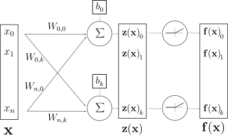
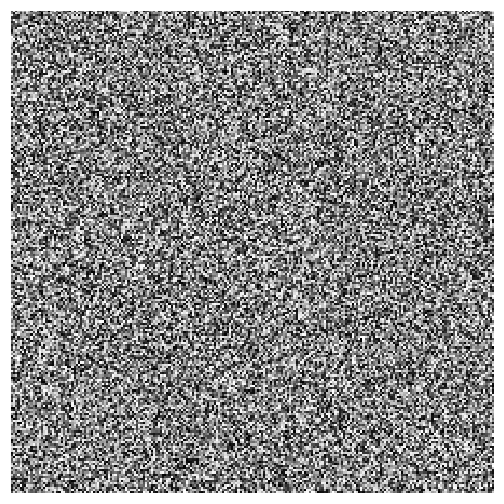
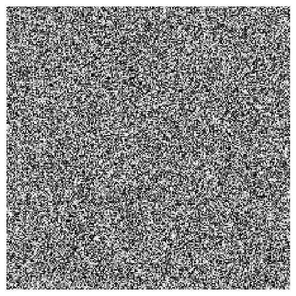
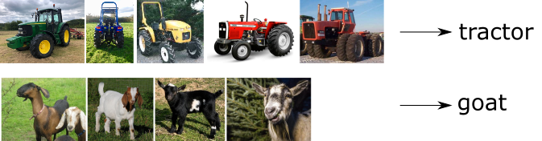
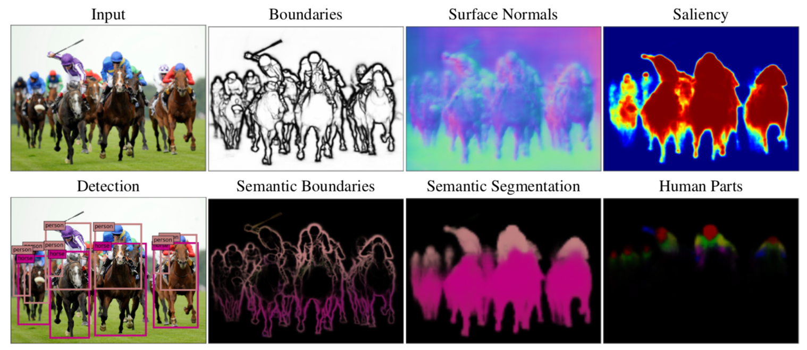
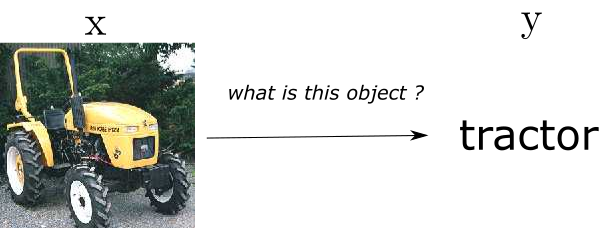
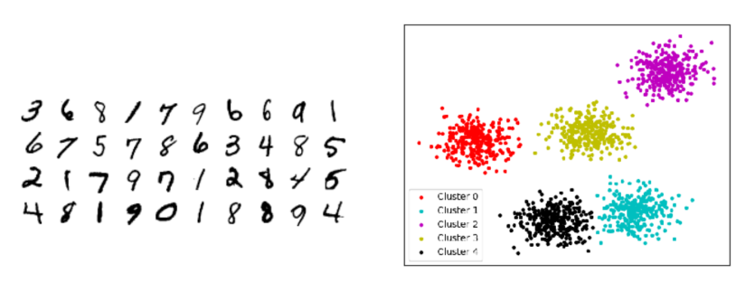
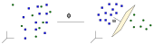
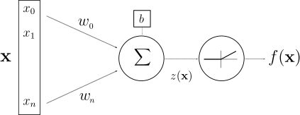
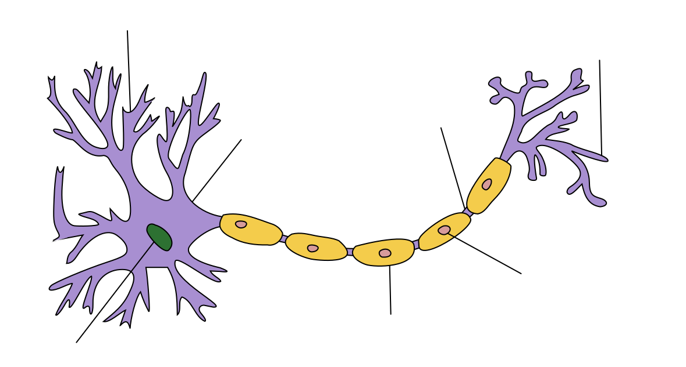

class: left, middle # The unreasonable effectiveness of CNNs - 19h: Welcome - 19h10: Intro to CNNs - 19h40: DigiFarm - 20h10: Visual intelligence in medicine and health, marine science, industry, energy, and earth observation --- class: center, middle # The unreasonable effectiveness of CNNs(1) Christopher Coello, data shepherd (1) ref to [Karpathy's blog entry](http://karpathy.github.io/2015/05/21/rnn-effectiveness/) from 2015 [Slides avalaible online](https://github.com/ChrCoello/Slides-PARK-CNN) --- # Path - Data and Images - Supervised Learning - Deep Learning - Convolutional Neural Networks (CNNs) .center[  ] --- # Data and images .center[ ] - Greyscale image: $x = (x(1), x(2), ..., x(d))$ where $x(i)$ contains the intensity value of pixel $i$ -- - Color image: $x = (x(1), x(2), ..., x(d))$ where $x(i)$ contains the RGB values of pixel $i$ -- - This means that: - for a 200x200 image, $d$=40k - for a 512x512 image, $d$=262k - for a 1920x1080 image, $d$=2M - **High dimensional** data ($x \in \mathbb{R}^d$) --- # Data and images - Natural images of objects are highly structured - Example of random image .center[   ] - Learn to recognize the structure in natural images --- # Supervised learning tasks .center[  ] - **Classification**: estimate a class label $f(x)$ given $n$ known samples $(x\_i,y\_i=f(x\_i))\_{i\leq n}$ -- - Huge variability inside classes -- - ** Find invariants ** -- - Other vision related tasks: regression, segmentation, object detection, etc.... --- # Vision tasks .center[  ] --- # Learning algorithms - Estimate the label $y$ knowing the input $x$ .center[  ] -- - Use the examples to learn .center[ ] --- # Learning algorithms - Use the examples to learn .center[ ] - **Supervised learning**: optimise parameters to make as little error on examples as possible $\tilde{y_i}\approx y_i$ .center[ <img src="images/sounds.jpg" style="width: 300px;" /> ] --- # Learning algorithms - Use the examples to learn .center[] - **Supervised learning**: optimise parameters to make as little error on examples as possible $\tilde{y_i}\approx y_i$ - ** Generalisation ** if minimum error on unknown example $x$, $\tilde{y} \approx y$ -- - Algorithms $\longleftrightarrow$ Mathematics --- # Labels ? - Getting labels is expensive - ** Unsupervised learning ** .center[  ] - Does not work in high dimension --- # Curse of Dimensionality - $f(x)$ can be approximated from examples $(x\_i,f(x\_i))\_{i \leq n}$ if **there are close examples** and if $f$ is regular. -- - To cover $[0, 1]^d$ at a distance 0.1 we need $10^d$ examples -- .center[ ] - $10^{80}$ atoms in the universe - distance btw unseen image and examples is **ALWAYS** very large --- # Linearize .center[  ] - change of variable: $x=(x_1,x_2,x_3,...,x_d) \rightarrow \phi (x) = (v_1,v_2,v_3,...,v_d)$ - how and when is possible to find such a $\phi$ ? - apriori information - learned --- # Linear Regression Models $$ f(X) = \beta\_0 + \sum\_{j=1}^{p} \beta\_jX\_j $$ Inputs ($X\_j$) can be tweaked : - log, square, square-root,... - basis expansions ($X\_2=X\_1^3$, $X\_3=X\_1 \times X\_2$ ) - dummy coding of qualitative inputs (true/false, week, month) No matter the source of the $X\_j$ , the model is linear in the parameters. --- # Typical ML system .center[ <img src="images/cat_model_link_math_supervised.svg" style="width: 770px;" /> ] <br /> ### Finding model ($f$) - often called training - choosing $\beta\_i$ so that $f(X)$ and $Y$ are the same as often as possible --- # Linear Regression Models .center[ <img src="images/linear_regression.PNG" style="width: 570px;" /> ] --- # Nearest Neighbour Model .center[ <img src="images/near_neigh_1.PNG" style="width: 400px;" /> ] <small>_Use this description (model) in order to predict the output given a new set of explanatory variables_</small> --- # Typical ML system .center[ <img src="images/cat_model_link_math_supervised.svg" style="width: 770px;" /> ] <br /> ### Finding model ($f$) - often called training - choosing $\beta\_i$ so that $f(X)$ and $Y$ are the same as often as possible **BUT NOT QUITE** --- # Nearest Neighbour Model .center[ <img src="images/near_neigh_15.PNG" style="width: 570px;" /> ] --- # Deep Learning system .center[ <img src="images/image_dl_without_text.png" style="width: 700px;" /> ] <br /> -- .center[ <img src="images/ Sound_City_Setagaya_DSC_1931.jpg" style="width: 450px;" /> ] --- # Deep Learning system .center[ <img src="images/image_dl_without_text.png" style="width: 700px;" /> ] <br /> .center[ <img src="images/resnet_152.png" style="width: 450px;" /> ] .center[**Resnet-50** (#params: 1.7M)<br /> <small>_Adapted from https://arxiv.org/abs/1512.03385_</small>] --- # Choosing an ML algorithm Explore the relevant mappings between inputs and output(s) .center[ $X \implies f(X)$ ]<br /> .center[ <img src="images/all_models.png" style="width: 400px;" /> ] --- class: middle, centers # Fundamental explanation of Deep Learning --- # Artificial Neuron .center[ <br /> McCulloch & Pitts (1943): inspiration from brain, but simplistic model with no will to be close to biology ] -- .center[ <br /> By <a href="https://en.wikipedia.org/wiki/User:Quasar_Jarosz" class="extiw" title="wikipedia:User:Quasar Jarosz">Quasar Jarosz</a> at <a href="https://en.wikipedia.org/wiki/" class="extiw" title="wikipedia:">English Wikipedia</a>, <a href="https://creativecommons.org/licenses/by-sa/3.0" title="Creative Commons Attribution-Share Alike 3.0">CC BY-SA 3.0</a>, <a href="https://commons.wikimedia.org/w/index.php?curid=7616130">Link</a> ] --- # Artificial Neuron .center[ ] .center[ $z(\mathbf{x}) = \mathbf{w}^T \mathbf{x} + b$ $f(\mathbf{x}) = g(\mathbf{w}^T \mathbf{x} + b)$ ] <br /> <table> <tr> <th scope="col" align="right">$\mathbf{x}, f(\mathbf{x}) \,\,$</th> <td>input and output</td> </tr> <tr> <th scope="col" align="right">$z(\mathbf{x})\,\,$</th> <td>pre-activation</td> <tr> <th scope="col" align="right">$\mathbf{w}, b\,\,$</th> <td>weights and bias</td> </tr> <tr> <th scope="col" align="right">$g\,\,$</th> <td>activation function</td> </tr> </table> --- # Layer of Neurons .center[ ] <br /> .center[ $\mathbf{f}(\mathbf{x}) = g(\textbf{z(x)}) = g(\mathbf{W} \mathbf{x} + \mathbf{b})$ ] <br /> - $\mathbf{W}, \mathbf{b}\,\,$ now matrix and vector --- # Universal approximation theorem .center[ ] <br /><br /> If you have big enough weight matrices and enough of them ($n$ and $k$ large), the above network can solve any arbitrarily complex mathematical function to any arbitrarily high level of accuracy...<br /> <br /> -- ...assuming that you can **train the parameters** both in terms of **time** and **data availability** ( <a target="_blank" rel="noopener noreferrer" href=https://en.wikipedia.org/wiki/Universal_approximation_theorem> mathematical formulation</a> ). --- # Key limitations ...assuming that you can **train the parameters** both in terms of **time** and **data availability** - **train the parameters** $\rightarrow$ backpropagation, regularisation -- - **time** $\rightarrow$ GPUs -- - **data availability** $\rightarrow$ transfer learning .center[ <img src="images/transfer_learning.jpg" style="width: 600px;" /> ] --- # Done. Yes really. --- # Done. Yes really. ### Rest is just (a lot of) refinements around: - availability of training/labeled/historical data (supervised vs semi-supervised vs unsupervised) - inputs/outputs: text, images, videos, time series, tabular data - network architecture - algorithms used to train/learn the parameters of your model ### High level libraries (e.g. Keras, FastAI) do these refinements for you --- # Friday .center[ <img src="images/slides_EPFM.png" style="width: 500px;" /> ] .center[ <small>Twitter: <a target="_blank" rel="noopener noreferrer" href="https://twitter.com/ChrCoello">@ChrCoello<a /></small> ]